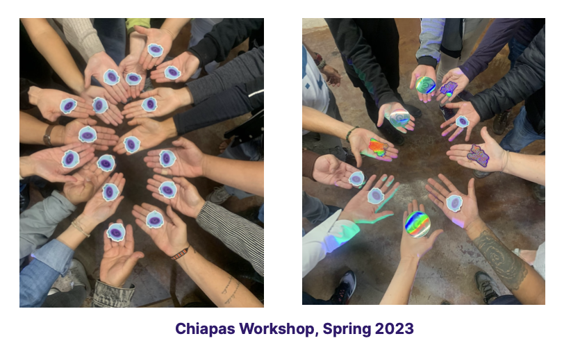

<!DOCTYPE html>
<html lang="en" itemscope itemtype="http://schema.org/WebPage">
  <head>
    

  <meta charset="utf-8" />
  <meta http-equiv="X-UA-Compatible" content="IE=edge">
  <meta name="viewport" content="width=device-width, initial-scale=1.0, maximum-scale=1.0">

  <title>Improving Usability of Tor on Smartphones in Latin America - Guardian Project</title>
  <meta property="og:title" content="Improving Usability of Tor on Smartphones in Latin America" />
  <meta name="twitter:title" content="Improving Usability of Tor on Smartphones in Latin America" />
  <meta name="description" content="Between 2022 and 2023 Guardian Project, with support from Okthanks and the Tor Project, organized and participated in a total of 12 workshops in Ecuador, Mexico and Brazil with the participation of 161 people. The workshops focused both on the broad topic of “Tor for Smartphones”, while also taking deeper dives into specific topics like virtual private networks VPNs) and anonymous web browsing. Through a variety of methods, we gathered feedback from the participants in each of those sessions.">
  <meta property="og:description" content="Between 2022 and 2023 Guardian Project, with support from Okthanks and the Tor Project, organized and participated in a total of 12 workshops in Ecuador, Mexico and Brazil with the participation of 161 people. The workshops focused both on the broad topic of “Tor for Smartphones”, while also taking deeper dives into specific topics like virtual private networks VPNs) and anonymous web browsing. Through a variety of methods, we gathered feedback from the participants in each of those sessions.">
  <meta name="twitter:description" content="Between 2022 and 2023 Guardian Project, with support from Okthanks and the Tor Project, organized and participated in a total of 12 workshops in Ecuador, Mexico and Brazil with the participation of …"><script type="application/ld+json">
{
    "@context": "http://schema.org",
    "@type": "WebSite",
    "name": "Guardian Project",
    
    "url": "https://guardianproject.github.io/info"
}
</script><script type="application/ld+json">
{
  "@context": "http://schema.org",
  "@type": "Organization",
  "name": "",
  "url": "https://guardianproject.github.io/info"
  
  
  
  
}
</script>
<script type="application/ld+json">
{
  "@context": "http://schema.org",
  "@type": "BreadcrumbList",
  "itemListElement": [{
        "@type": "ListItem",
        "position": 1,
        "item": {
          "@id": "https://guardianproject.github.io/info",
          "name": "home"
        }
    },{
        "@type": "ListItem",
        "position": 3,
        "item": {
          "@id": "https://guardianproject.github.io/info/2023/06/02/improving-usability-of-tor-on-smartphones-in-latin-america/",
          "name": "Improving usability of tor on smartphones in latin america"
        }
    }]
}
</script><script type="application/ld+json">
{
  "@context": "http://schema.org",
  "@type": "Article",
  "author": {
    "name" : "Fabiola, Carrie, and Nathan"
  },
  "headline": "Improving Usability of Tor on Smartphones in Latin America",
  "description" : "Between 2022 and 2023 Guardian Project, with support from Okthanks and the Tor Project, organized and participated in a total of 12 workshops in Ecuador, Mexico and Brazil with the participation of 161 people. The workshops focused both on the broad topic of “Tor for Smartphones”, while also taking deeper dives into specific topics like virtual private networks VPNs) and anonymous web browsing. Through a variety of methods, we gathered feedback from the participants in each of those sessions.",
  "inLanguage" : "en",
  "wordCount": 466,
  "datePublished" : "0001-01-01T00:00:00",
  "dateModified" : "2023-06-02T00:00:00",
  "image" : "https://guardianproject.github.io/info/Guardian_Project_LogoMark_Full_Color.svg",
  "keywords" : [ "usability, torproject, orbot, latinamerica" ],
  "mainEntityOfPage" : "https://guardianproject.github.io/info/2023/06/02/improving-usability-of-tor-on-smartphones-in-latin-america/",
  "publisher" : {
    "@type": "Organization",
    "name" : "https://guardianproject.github.io/info",
    "logo" : {
        "@type" : "ImageObject",
        "url" : "https://guardianproject.github.io/info/Guardian_Project_LogoMark_Full_Color.svg",
        "height" :  60 ,
        "width" :  60
    }
  }
}
</script>

<meta property="og:title" content="Improving Usability of Tor on Smartphones in Latin America" />
<meta property="og:description" content="Between 2022 and 2023 Guardian Project, with support from Okthanks and the Tor Project, organized and participated in a total of 12 workshops in Ecuador, Mexico and Brazil with the participation of 161 people. The workshops focused both on the broad topic of “Tor for Smartphones”, while also taking deeper dives into specific topics like virtual private networks VPNs) and anonymous web browsing. Through a variety of methods, we gathered feedback from the participants in each of those sessions.">
<meta property="og:image" content="https://guardianproject.github.io/info/Guardian_Project_LogoMark_Full_Color.svg" />
<meta property="og:url" content="https://guardianproject.github.io/info/2023/06/02/improving-usability-of-tor-on-smartphones-in-latin-america/" />
<meta property="og:type" content="website" />
<meta property="og:site_name" content="Guardian Project" />

  <meta name="twitter:title" content="Improving Usability of Tor on Smartphones in Latin America" />
  <meta name="twitter:description" content="Between 2022 and 2023 Guardian Project, with support from Okthanks and the Tor Project, organized and participated in a total of 12 workshops in Ecuador, Mexico and Brazil with the participation of …">
  <meta name="twitter:image" content="https://guardianproject.github.io/info/Guardian_Project_LogoMark_Full_Color.svg" />
  <meta name="twitter:card" content="summary" />
  <link href='https://guardianproject.github.io/info/Guardian_Project_LogoMark_Full_Color.svg' rel='icon' type='image/x-icon'/>
  <meta property="og:image" content="https://guardianproject.github.io/info/Guardian_Project_LogoMark_Full_Color.svg" />
  <meta name="twitter:image" content="https://guardianproject.github.io/info/Guardian_Project_LogoMark_Full_Color.svg" />
  <meta name="twitter:card" content="summary" />
  <meta property="og:url" content="https://guardianproject.github.io/info/2023/06/02/improving-usability-of-tor-on-smartphones-in-latin-america/" />
  <meta property="og:type" content="website" />
  <meta property="og:site_name" content="Guardian Project" />

  <meta name="generator" content="Hugo 0.54.0" />
  <link rel="alternate" href="https://guardianproject.github.io/info/index.xml" type="application/rss+xml" title="Guardian Project">

  <link rel="stylesheet" href="https://guardianproject.github.io/info/fork-awesome/css/fork-awesome.min.css" /><link rel="stylesheet" href="https://guardianproject.github.io/info/css/katex.min.css" />
  <link rel="stylesheet" href="https://guardianproject.github.io/info/css/bootstrap.min.css" /><link rel="stylesheet" href="https://guardianproject.github.io/info/css/main.css" /><link rel="stylesheet" href="https://guardianproject.github.io/info/css/fonts.css" /><link rel="stylesheet" href="https://guardianproject.github.io/info/css/syntax.css" /><link rel="stylesheet" href="https://guardianproject.github.io/info/css/codeblock.css" /><link rel="stylesheet" href="https://guardianproject.github.io/info/css/photoswipe.min.css" />
  <link rel="stylesheet" href="https://guardianproject.github.io/info/css/photoswipe.default-skin.min.css" /><script defer src="https://guardianproject.github.io/info/libresilient.js"></script>


  </head>
  <body>
    <nav class="navbar navbar-default navbar-fixed-top navbar-custom">
  <div class="container-fluid">
    <div class="navbar-header">
      <button type="button" class="navbar-toggle" data-toggle="collapse" data-target="#main-navbar">
        <span class="sr-only">Toggle navigation</span>
        <span class="icon-bar"></span>
        <span class="icon-bar"></span>
        <span class="icon-bar"></span>
      </button>

	<a class="navbar-brand" title="Guardian Project" href="https://guardianproject.github.io/info">

    </div>

    <div class="collapse navbar-collapse" id="main-navbar">
      <ul class="nav navbar-nav navbar-right">
        
          
            <li class="navlinks-container">
              <a class="navlinks-parent">about</a>
              <div class="navlinks-children">
                
                  <a href="https://guardianproject.github.io/info/blog/">Blog</a>
                
                  <a href="https://guardianproject.info/podcast/">podcast</a>
                
                  <a href="https://guardianproject.github.io/info/brand/">New Branding</a>
                
                  <a href="https://guardianproject.github.io/info/story/">Our Story</a>
                
                  <a href="https://guardianproject.github.io/info/partners/">Partners and Funding</a>
                
                  <a href="https://guardianproject.github.io/info/press/">Press</a>
                
                  <a href="https://guardianproject.github.io/info/services/">Services</a>
                
                  <a href="https://guardianproject.github.io/info/signing-keys/">Signing Keys</a>
                
                  <a href="https://guardianproject.github.io/info/team/">Team</a>
                
              </div>
            </li>
          
        
          
            <li class="navlinks-container">
              <a class="navlinks-parent">apps</a>
              <div class="navlinks-children">
                
                  <a href="https://guardianproject.github.io/info/apps/info.guardianproject.checkey/">Checkey: info on local apps</a>
                
                  <a href="https://guardianproject.github.io/info/apps/circulo/">Círculo</a>
                
                  <a href="https://guardianproject.github.io/info/apps/org.havenapp.main/">Haven</a>
                
                  <a href="https://guardianproject.github.io/info/apps/info.guardianproject.locationprivacy/">Location Privacy - BETA</a>
                
                  <a href="https://guardianproject.github.io/info/apps/org.witness.sscphase1/">ObscuraCam: The Privacy Camera</a>
                
                  <a href="https://guardianproject.github.io/info/apps/org.torproject.android/">Orbot: Proxy with Tor</a>
                
                  <a href="https://guardianproject.github.io/info/apps/info.guardianproject.orfox/">Orfox</a>
                
                  <a href="https://guardianproject.github.io/info/apps/info.guardianproject.pixelknot/">PixelKnot: Hidden Messages</a>
                
                  <a href="https://guardianproject.github.io/info/apps/org.witness.proofmode/">ProofMode: Verified Visuals</a>
                
                  <a href="https://guardianproject.github.io/info/apps/info.guardianproject.ripple/">Ripple: respond when panicking</a>
                
                  <a href="https://guardianproject.github.io/info/apps/net.opendasharchive.openarchive.release/">Save</a>
                
                  <a href="https://guardianproject.github.io/info/apps/org.torproject.torbrowser/">Tor Browser for Android</a>
                
                  <a href="https://guardianproject.github.io/info/apps/org.torproject.torbrowser_alpha/">Tor Browser for Android (Alpha)</a>
                
                  <a href="https://guardianproject.github.io/info/apps/org.torproject.torservices/">TorServices (alpha)</a>
                
              </div>
            </li>
          
        
          
            <li class="navlinks-container">
              <a class="navlinks-parent">code</a>
              <div class="navlinks-children">
                
                  <a href="https://guardianproject.github.io/info/code/cleaninsights/">Clean Insights: Privacy Preserving Measurement</a>
                
                  <a href="https://guardianproject.github.io/info/code/iocipher/">IOCipher: Virtual Encrypted Disks</a>
                
                  <a href="https://guardianproject.github.io/info/code/netcipher/">NetCipher: Secured Networking</a>
                
                  <a href="https://guardianproject.github.io/info/code/panickit/">PanicKit: system-wide panic responses</a>
                
                  <a href="https://guardianproject.github.io/info/code/sqlcipher/">SQLCipher: Encrypted Database</a>
                
                  <a href="https://guardianproject.github.io/info/code/tor-android/">TorService: Tor library for Android</a>
                
                  <a href="https://guardianproject.github.io/info/code/trustedintents/">TrustedIntents: flexible trusted interactions between Android apps</a>
                
                  <a href="https://guardianproject.github.io/info/code/wind/">Wind: Off-Grid Services for Everyday People</a>
                
              </div>
            </li>
          
        
          
            <li class="navlinks-container">
              <a class="navlinks-parent">archive</a>
              <div class="navlinks-children">
                
                  <a href="https://guardianproject.github.io/info/archive/apps/">Archived Apps</a>
                
                  <a href="https://guardianproject.github.io/info/archive/cacheword/">CacheWord: Passphrase Caching and Management</a>
                
                  <a href="https://guardianproject.github.io/info/archive/camerav/">CameraV: Secure Verifiable Photo &amp; Video Camera</a>
                
                  <a href="https://guardianproject.github.io/info/archive/courier/">Courier: Secure News reader</a>
                
                  <a href="https://guardianproject.github.io/info/archive/developersquare/">Developer Square</a>
                
                  <a href="https://guardianproject.github.io/info/archive/ffmpeg/">FFMPEG: Media Privacy Framework</a>
                
                  <a href="https://guardianproject.github.io/info/archive/firefoxprivacy/">Firefox Mobile: Privacy Enhanced</a>
                
                  <a href="https://guardianproject.github.io/info/freebird/">Freebird Workshop</a>
                
                  <a href="https://guardianproject.github.io/info/archive/gnupg/">GnuPG: OpenPGP Encryption</a>
                
                  <a href="https://guardianproject.github.io/info/archive/hardware/">Hardware Guide</a>
                
                  <a href="https://guardianproject.github.io/info/archive/informacam/">InformaCam: Verified Mobile Media</a>
                
                  <a href="https://guardianproject.github.io/info/archive/keysync/">KeySync: Syncing Trusted Identities</a>
                
                  <a href="https://guardianproject.github.io/info/archive/luks/">LUKS: Disk Encryption</a>
                
                  <a href="https://guardianproject.github.io/info/archive/lildebi/">Lil&#39; Debi: Mobile Debian Installer</a>
                
                  <a href="https://guardianproject.github.io/info/archive/onionkit/">OnionKit for Android</a>
                
                  <a href="https://guardianproject.github.io/info/archive/orbot/">Orbot: Tor for Android</a>
                
                  <a href="https://guardianproject.github.io/info/archive/orweb/">Orweb: Private Web Browser</a>
                
                  <a href="https://guardianproject.github.io/info/archive/ostel/">Ostel: Encrypted Phone Calls</a>
                
                  <a href="https://guardianproject.github.io/info/archive/pixelknot/">Pixelknot: Hidden Messages</a>
                
                  <a href="https://guardianproject.github.io/info/archive/tutorials/">Tutorials</a>
                
                  <a href="https://guardianproject.github.io/info/archive/weatherrepo/">Weather Repo</a>
                
                  <a href="https://guardianproject.github.io/info/archive/libsqlfs/">libsqlfs: filesystem on top of SQLite/SQLCipher</a>
                
              </div>
            </li>
          
        
          
            <li class="navlinks-container">
              <a class="navlinks-parent">contact</a>
              <div class="navlinks-children">
                
                  <a href="https://guardianproject.github.io/info/contact/">Contact</a>
                
                  <a href="https://guardianproject.github.io/info/how-you-can-work-with-us/">How You Can Work With Us</a>
                
                  <a href="https://guardianproject.github.io/info/contact/join/">Jobs and Internships</a>
                
                  <a href="https://guardianproject.github.io/info/contact/chat/">Live Chatrooms</a>
                
                  <a href="https://social.librem.one/@guardianproject">Toot @guardianproject@librem.one</a>
                
                  <a href="https://twitter.com/guardianproject">Tweet @guardianproject</a>
                
              </div>
            </li>
          
        

            <li class="navlinks-container">
              <a class="navlinks-parent" title="Language">
		<i class="fa fa-language" style="font-size: 1.75em"></i>
	      </a>
	      
            </li>

        
      </ul>
    </div>
  </div>
</nav>


    


<div class="pswp" tabindex="-1" role="dialog" aria-hidden="true">

<div class="pswp__bg"></div>

<div class="pswp__scroll-wrap">
    
    <div class="pswp__container">
      <div class="pswp__item"></div>
      <div class="pswp__item"></div>
      <div class="pswp__item"></div>
    </div>
    
    <div class="pswp__ui pswp__ui--hidden">
    <div class="pswp__top-bar">
      
      <div class="pswp__counter"></div>
      <button class="pswp__button pswp__button--close" title="Close (Esc)"></button>
      <button class="pswp__button pswp__button--share" title="Share"></button>
      <button class="pswp__button pswp__button--fs" title="Toggle fullscreen"></button>
      <button class="pswp__button pswp__button--zoom" title="Zoom in/out"></button>
      
      
      <div class="pswp__preloader">
        <div class="pswp__preloader__icn">
          <div class="pswp__preloader__cut">
            <div class="pswp__preloader__donut"></div>
          </div>
        </div>
      </div>
    </div>
    <div class="pswp__share-modal pswp__share-modal--hidden pswp__single-tap">
      <div class="pswp__share-tooltip"></div>
    </div>
    <button class="pswp__button pswp__button--arrow--left" title="Previous (arrow left)">
    </button>
    <button class="pswp__button pswp__button--arrow--right" title="Next (arrow right)">
    </button>
    <div class="pswp__caption">
      <div class="pswp__caption__center"></div>
    </div>
    </div>
    </div>
</div>


  
  
  


  

  <header class="header-section ">
    
    <div class="intro-header no-img">
      <div class="container">
        <div class="row">
          <div class="col-lg-8 col-lg-offset-2 col-md-10 col-md-offset-1">
            <div class="blog-heading">
              
                <h1>Improving Usability of Tor on Smartphones in Latin America</h1>
              
              
                <hr class="small">
              
              
              
                <span class="post-meta">
  
  <i class="fa fa-calendar"></i>&nbsp;Posted on June 2, 2023
  
  
  
    &nbsp;|&nbsp;<i class="fa fa-user"></i>&nbsp;Fabiola, Carrie, and Nathan
  
  
</span>


              
            </div>
          </div>
        </div>
      </div>
    </div>
  </header>


    
<div class="container" role="main">
  <div class="row">
    <div class="col-lg-8 col-lg-offset-2 col-md-10 col-md-offset-1">
      <article role="main" class="blog-post">
        <p>Between 2022 and 2023 Guardian Project, with support from <a href="https://okthanks.com">Okthanks</a> and the <a href="https://torproject.org">Tor Project</a>, organized and participated in a total of 12 workshops in Ecuador, Mexico and Brazil with the participation of 161 people. The workshops focused both on the broad topic of “Tor for Smartphones”, while also taking deeper dives into specific topics like virtual private networks VPNs) and anonymous web browsing. Through a variety of methods, we gathered feedback from the participants in each of those sessions. We also ran detailed individual tests with volunteers to collect insights related to new features and usability improvements on specific apps.
Our top takeaways from this process were, as follows:</p>

<p></p>

<ul>
<li><strong>Changing Misconceptions of Performance</strong> A positive outcome of each workshop was the opportunity to show participants how much has the Tor network speed improved and address misconceptions related to downloading files and watching videos, one of the main reasons why users stopped using Tor in the past.</li>
<li><strong>Ease of Onboarding Matters</strong> When working with at-risk individuals, it’s important for the first experience to be easy and straightforward.</li>
<li><strong>Support Flexible Use</strong> People’s behaviors around using VPNs tend to vary. Many will use it in certain situations. They are not running it all of the time for everything, but only when they need it.</li>
<li><strong>Consider Physical Security</strong> One of the high-level threats we identified during the workshops we ran was the existence of physical check-points run by drug cartels in the south of Mexico. People entering or leaving an area are asked either to provide access to their phones for review or leave them at the checkpoint until they leave the area. It is not clear what they are looking for when they get access to a device, but in many cases, people who left their devices at the checkpoint do not return to claim them out of fear. For this reason, we encourage the use of app icon camouflage features on privacy and security focused apps.</li>
<li><strong>Awareness and Education</strong> The primary reason people in Latin America have been slow to adopt Tor tools is not that they do not work in their context, but due to awareness they exist. They have a hard time understanding what they do and how they work, and have many misconceptions about them. Continued outreach and education about which tools to use when is needed to increase adoption.</li>
</ul>

<p></p>

<p><strong>We are proud to share this 20 page report on our usability focused work on Tor in Latin America</strong>
Thank you to everyone who made this work possible, from our partners at Tor Project, our community partners, funders, designers, developers, and other supporters. Without all of you, we would not be able to do this important work to broaden the reach and effectiveness of privacy-enhancing tools in Latin America.</p>

<p><a href="GuardianProject-TorUsabilityOnSmartphonesLatinAmerica-May2023-v0.0.2.pdf">Download the full report PDF here.</a></p>


        
          <div class="blog-tags">
            
              <a href="https://guardianproject.github.io/info/tags/usability/">usability</a>&nbsp;
            
              <a href="https://guardianproject.github.io/info/tags/torproject/">torproject</a>&nbsp;
            
              <a href="https://guardianproject.github.io/info/tags/orbot/">orbot</a>&nbsp;
            
              <a href="https://guardianproject.github.io/info/tags/latinamerica/">latinamerica</a>&nbsp;
            
          </div>
        

        

        
      </article>

      
        <ul class="pager blog-pager">
          
            <li class="previous">
              <a href="https://guardianproject.github.io/info/2023/04/04/ietf116-conference-report-friday-march-31-2023/" data-toggle="tooltip" data-placement="top" title="IETF116 Conference Report: Friday March 31, 2023">&larr; Previous Post</a>
            </li>
          
          
            <li class="next">
              <a href="https://guardianproject.github.io/info/2023/06/11/eu-should-not-require-sharing-unpatched-vulnerabilities/" data-toggle="tooltip" data-placement="top" title="EU should not require sharing unpatched vulnerabilities">Next Post &rarr;</a>
            </li>
          
        </ul>
      
    </div>
  </div>
</div>

    <footer>
  <div class="container">
    <div class="row">
      <div class="col-lg-8 col-lg-offset-2 col-md-10 col-md-offset-1">
        <ul class="list-inline text-center footer-links">
          
          
          <li>
            <a href="/index.xml" title="RSS">
              <span class="fa-stack fa-lg">
                <i class="fa fa-circle fa-stack-2x"></i>
                <i class="fa fa-rss fa-stack-1x fa-inverse"></i>
              </span>
            </a>
          </li>
          
          
          <li>
            <a rel="me" href="https://social.librem.one/@guardianproject" title="mastodon">
              <span class="fa-stack fa-lg">
                <i class="fa fa-circle fa-stack-2x"></i>
                <i class="fa fa-mastodon fa-stack-1x fa-inverse"></i>
              </span>
            </a>
          </li>
          
          
          <li>
            <a href="https://twitter.com/guardianproject" title="twitter">
              <span class="fa-stack fa-lg">
                <i class="fa fa-circle fa-stack-2x"></i>
                <i class="fa fa-twitter fa-stack-1x fa-inverse"></i>
              </span>
            </a>
          </li>
          
          
          <li>
            <a href="https://matrix.to/#/%23guardianproject%3amatrix.org" title="matrix">
              <span class="fa-stack fa-lg">
                <i class="fa fa-circle fa-stack-2x"></i>
                <i class="fa fa-matrix-org fa-stack-1x fa-inverse"></i>
              </span>
            </a>
          </li>
          
          
          <li>
            <a href="https://github.com/guardianproject" title="github">
              <span class="fa-stack fa-lg">
                <i class="fa fa-circle fa-stack-2x"></i>
                <i class="fa fa-github fa-stack-1x fa-inverse"></i>
              </span>
            </a>
          </li>
          
          
          <li>
            <a href="https://gitlab.com/guardianproject" title="gitlab">
              <span class="fa-stack fa-lg">
                <i class="fa fa-circle fa-stack-2x"></i>
                <i class="fa fa-gitlab fa-stack-1x fa-inverse"></i>
              </span>
            </a>
          </li>
          
          
          <li>
            <a href="https://liberapay.com/GuardianProject" title="liberapay">
              <span class="fa-stack fa-lg">
                <i class="fa fa-circle fa-stack-2x"></i>
                <i class="fa fa-liberapay fa-stack-1x fa-inverse"></i>
              </span>
            </a>
          </li>
          
        </ul>
        <p class="credits copyright text-muted">
          

          &nbsp;&bull;&nbsp;&copy;
          
            2009 - 2026
          

          
            &nbsp;&bull;&nbsp;
            <a href="https://guardianproject.github.io/info">Guardian Project</a>
          
        </p>
	<p class="credits text-center text-muted">
	  
	</p>
      </div>
    </div>
  </div>
</footer><script src="https://guardianproject.github.io/info/js/katex.min.js"></script>
<script src="https://guardianproject.github.io/info/js/auto-render.min.js"></script>
<script src="https://guardianproject.github.io/info/js/jquery.min.js"></script>
<script src="https://guardianproject.github.io/info/js/bootstrap.min.js"></script>

<script src="https://guardianproject.github.io/info/js/main.js"></script><script> renderMathInElement(document.body); </script><script src="https://guardianproject.github.io/info/js/photoswipe.min.js"></script>
<script src="https://guardianproject.github.io/info/js/photoswipe-ui-default.min.js"></script><script src="https://guardianproject.github.io/info/js/load-photoswipe.js"></script>


  </body>
</html>

